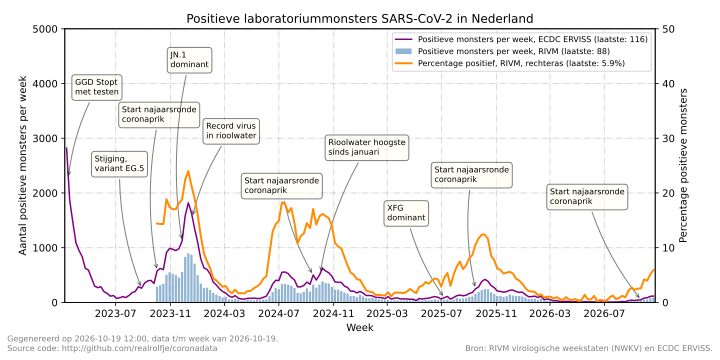

🔍 Positieve laboratoriummonsters SARS-CoV-2 in Nederland

De blauwe staven tonen per week het aantal monsters waarin een laboratorium SARS-CoV-2 heeft gevonden. De oranje lijn toont welk percentage van de geteste monsters positief was. Deze lijn hoort bij de rechteras. Beide reeksen komen uit de virologische weekstaten van het RIVM. De laboratoria van de Nederlandse Werkgroep voor Klinische Virologie leveren deze cijfers. De reeksen beginnen in oktober 2023.
De paarse lijn toont de positieve monsters die Nederland aan het Europese ECDC meldt (ERVISS). Deze reeks begint eerder en vult de periode van maart tot oktober 2023. De aantallen liggen hoger dan die van het RIVM. De twee bronnen tellen dus niet dezelfde monsters. Daarom staat ERVISS als aparte lijn in de grafiek. De reeksen zijn niet samengevoegd.
De grafiek begint in maart 2023. Toen stopten de landelijke testcijfers. Die staan in het archief. De laboratoriumcijfers zijn niet vergelijkbaar met de oude testcijfers.
Bronnen: RIVM weekcijfers en ECDC ERVISS.